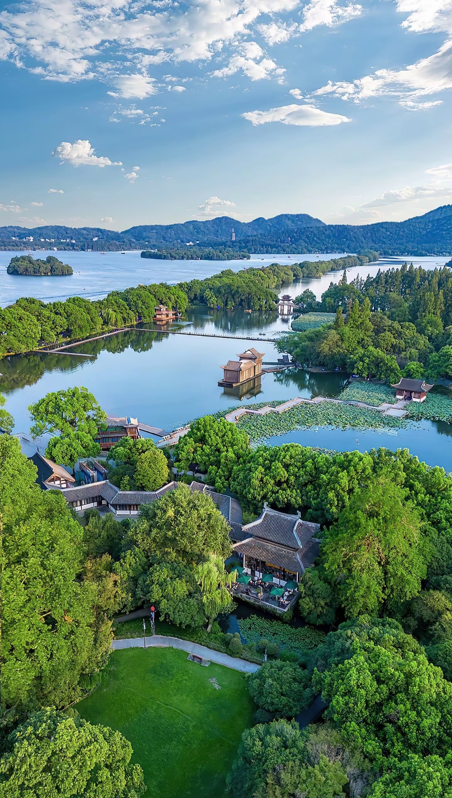
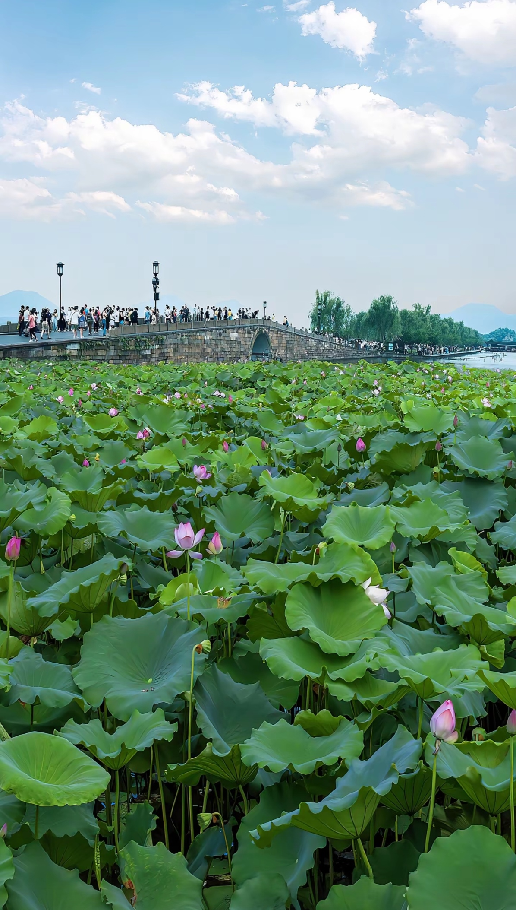
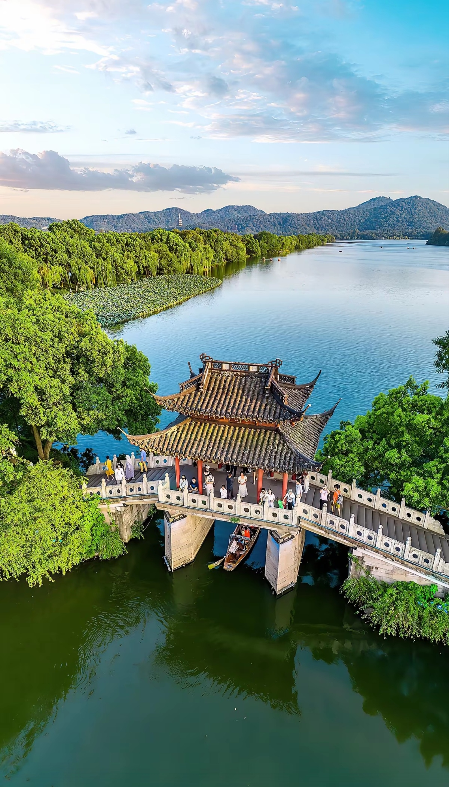
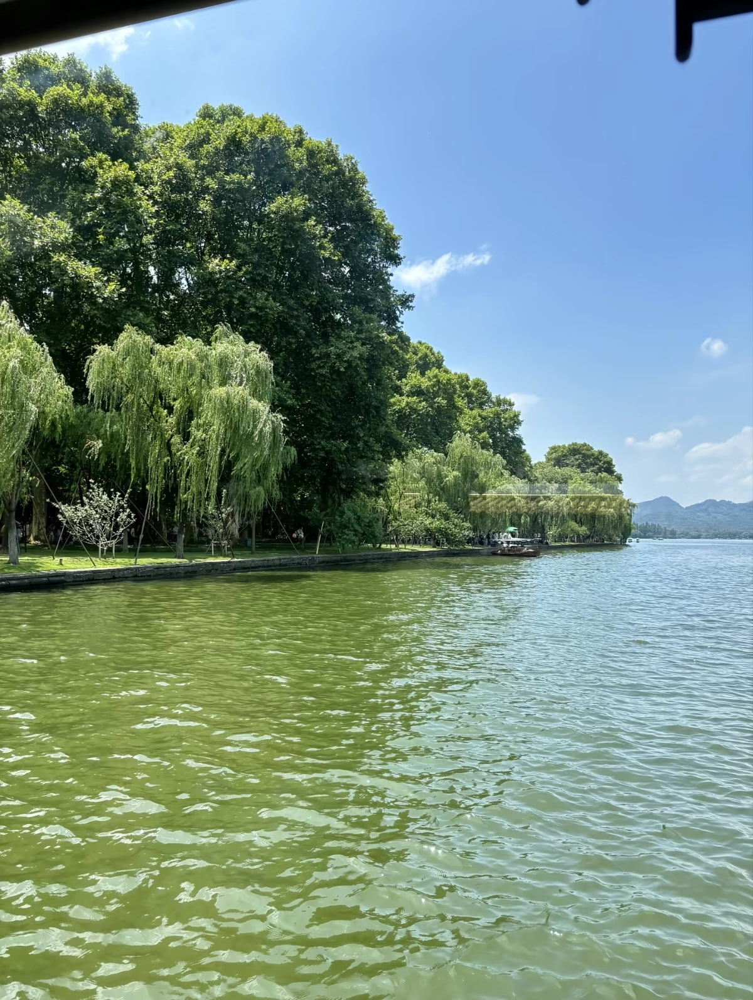
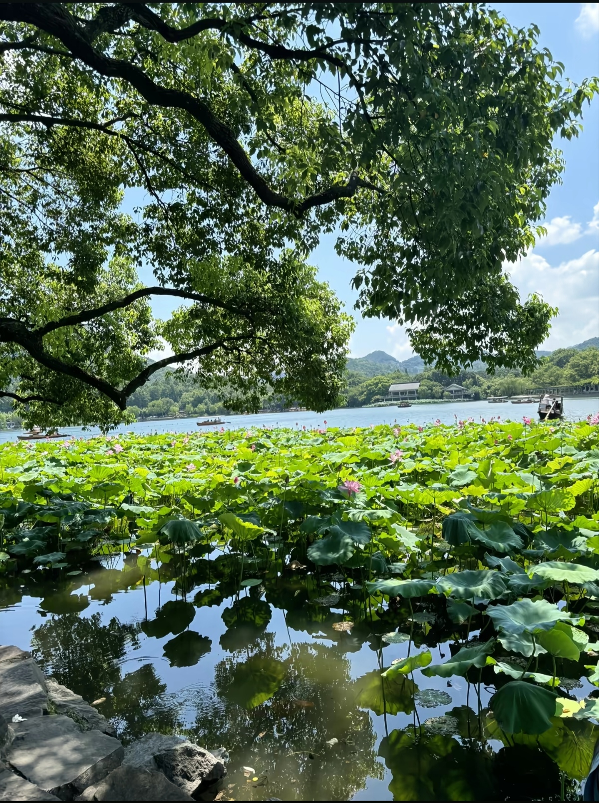
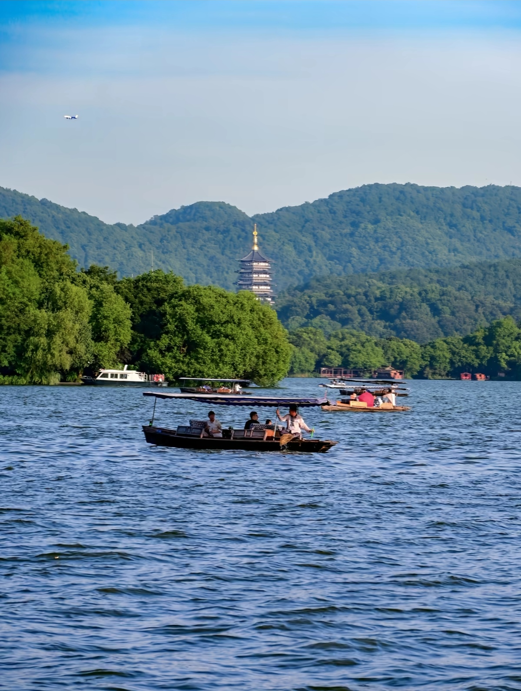

West Lake (Xi Hu) is a freshwater lake in Hangzhou, Zhejiang Province, and one of China's most famous scenic spots. A UNESCO World Heritage Site since 2011, it has inspired Chinese poets, painters, and philosophers for over 1,000 years. The lake covers 6.39 square kilometers and is surrounded by hills on three sides. Its serene waters, pagodas, temples, and gardens represent the ideal of classical Chinese landscape design.






Train: Shanghai Hongqiao to Hangzhou East Station (45-60 min, ¥73-117). Then Metro Line 1 to Longxiangqiao Station, walk 10 min to West Lake.
Metro Line 1: Longxiangqiao Station (龙翔桥站) - closest to West Lake. Exit C, walk 10 minutes. Cost: ¥2-4.
Bus Routes: K1, K2, K7, Y1, Y2, Y3 all stop near West Lake. Cost: ¥2. Very convenient from anywhere in Hangzhou.
DiDi/Taxi: From Hangzhou East Railway Station: 20 min, ¥25-35. From Hangzhou Xiaoshan Airport: 40 min, ¥100-130.
Start: Broken Bridge (断桥) → Bai Causeway → Solitary Hill → West Lake Museum → Su Causeway → Flower Harbor Park → Leifeng Pagoda
Distance: 8 km walking
Best for: First-time visitors, photographers
Start: Hubin Park Wharf → Three Pools Mirroring the Moon → Return
Cost: ¥55 per person (includes island landing)
Best Time: Morning (9-11 AM) for calm water and good light
Route: Full circle around West Lake (15 km)
Bike Rental: ¥20-30 per hour, available at multiple spots
Best for: Active travelers, families
Start: Lingyin Temple (飞来峰) → Faxi Temple → West Lake → Leifeng Pagoda → Hefang Street (evening)
Highlights: Ancient Buddhist temples, tea culture, local snacks
Location: No. 30, Gushan Road (on Solitary Hill)
Specialty: West Lake Vinegar Fish, Dongpo Pork, Longjing Shrimp
Hours: 11:00 AM - 9:00 PM
Location: No. 87, Yan'an Road
Specialty: Xiaolongbao, Wontons, Noodles
Hours: 6:00 AM - 9:00 PM
Location: Multiple locations near West Lake
Specialty: Braised pork, Tofu dishes, Seasonal vegetables
Hours: 10:00 AM - 10:00 PM
Location: Longjing Village (west of West Lake)
Specialty: Longjing green tea, Tea-infused dishes
Hours: 9:00 AM - 6:00 PM
Location: No. 9, Lingyin Road (west of West Lake)
Features: Lake views, Spa, Fine dining
Distance to Lake: 5 min walk
Location: No. 84, Nanshan Road (on the lake)
Features: Historic, Garden setting, Lake access
Distance to Lake: On the lake
Location: Qianjiang New City
Features: Modern, Business district, Metro access
Distance to Lake: 20 min by metro
Location: Hubin Road shopping district
Features: Central location, Shopping, Street food
Distance to Lake: 5-10 min walk